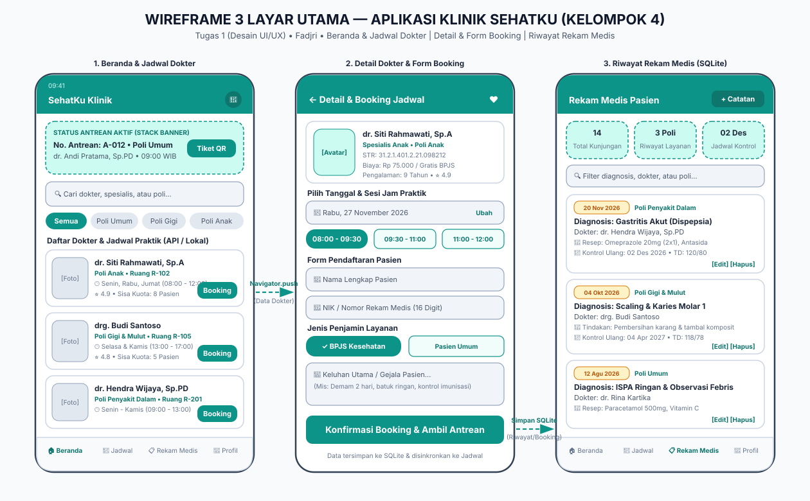
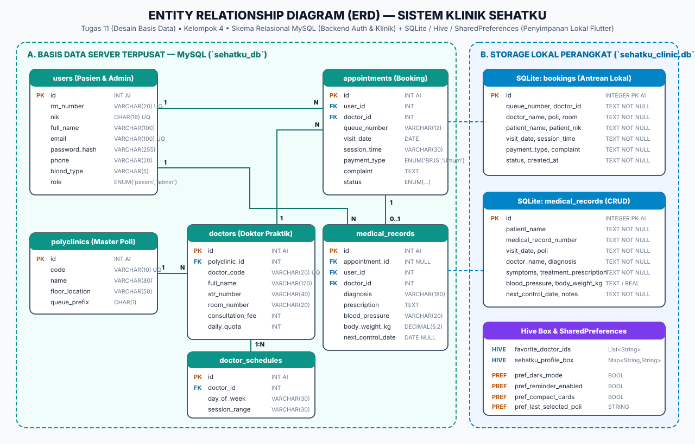
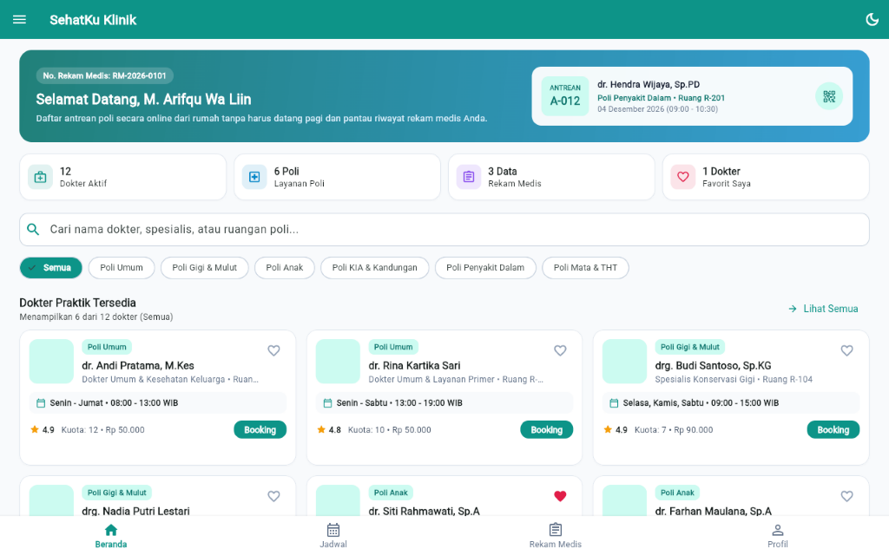
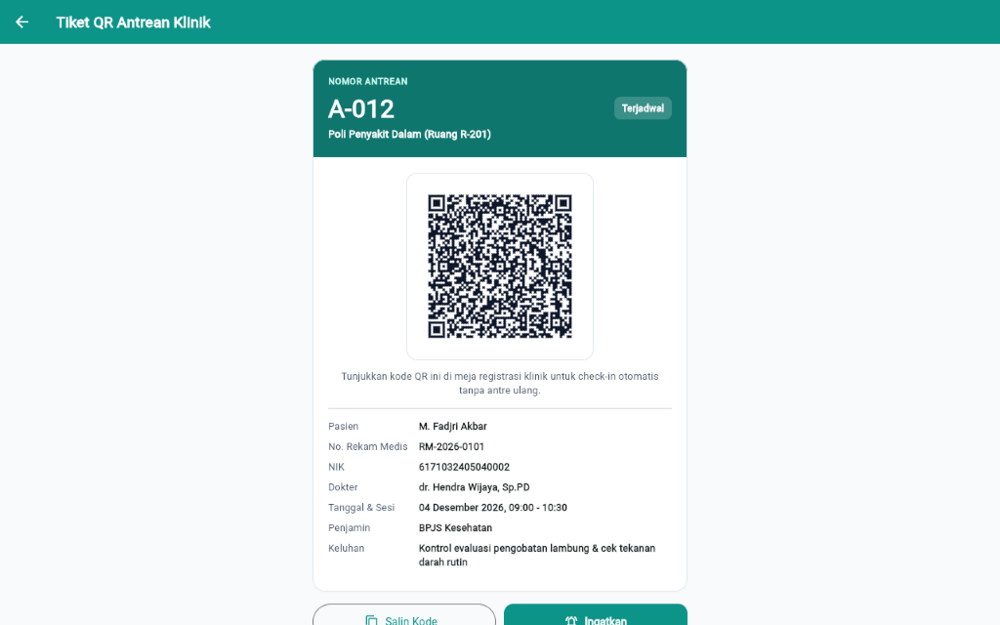
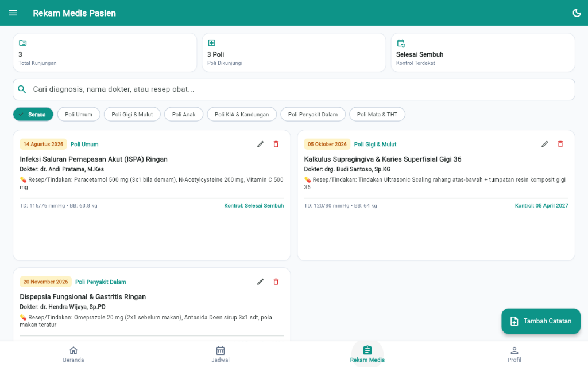
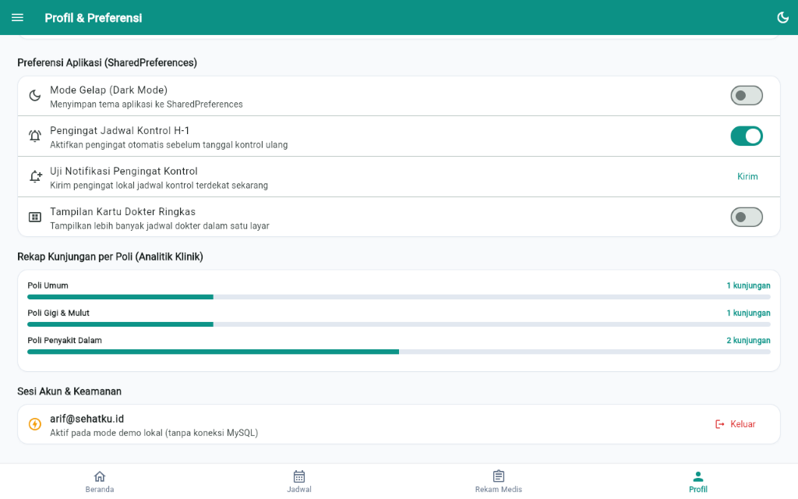

Aplikasi pendaftaran antrean online dan rekam medis klinik berbasis Flutter untuk klinik pratama.
Pasien harus datang lebih awal untuk mengambil nomor antrean fisik, sehingga ruang tunggu padat di pagi hari.
Ketersediaan dokter praktik, poli, dan sisa kuota harian sulit dipantau pasien sebelum berangkat ke klinik.
Catatan diagnosis, resep obat, dan jadwal kontrol ulang masih berupa kertas yang rentan tercecer atau rusak.
Pencarian real-time, filter poli dinamis, serta pemuatan data dokter mitra dari REST API DummyJSON.
Pilihan penjamin BPJS atau Umum, validasi NIK 16 digit, checklist berkas, dan tiket QR siap pindai.
CRUD rekam medis di SQLite, lampiran foto resep/lab dari galeri, dan notifikasi kontrol H-1.
Umum • Gigi • Anak • Penyakit Dalam • Kandungan • Mata
Didukung autentikasi PHP PDO + MySQL (bcrypt) serta Mode Demo Lokal untuk akses cepat tanpa server.


| Lapisan | Implementasi di SehatKu | Keunggulan |
|---|---|---|
| UI & Responsif | Material 3 Light/Dark Mode, ListView (Mobile) & GridView (Tablet/Web) |
Satu basis kode untuk Android APK dan Flutter Web |
State Lokal (setState) |
ClinicPrepChecklistWidget pada halaman detail booking |
Ringan untuk state sesaat (checklist berkas & estimasi tunggu) |
State Global (Provider) |
MultiProvider: AuthProvider & ClinicDataProvider |
Data sesi, favorit, booking, dan rekap poli sinkron lintas halaman |
| Asinkron & Storage | Future/async-await, SQLite CRUD, Hive, dan SharedPreferences |
UI tetap responsif (non-blocking) & data persisten saat offline |



Automated Tests Passed (flutter test)
Mencakup unit test validasi NIK & biaya, widget test ClinicPrepChecklistWidget, auth guard, dan async lab.
Diterapkan pada PatientValidator.formatQueueNumber (A-007).
Layout Login/Profil diperbaiki dengan komponen fleksibel dan timer di AsyncDemoService dibatalkan saat selesai.
Plugin notifikasi & permission menuntut SDK 37; diselesaikan dengan upgrade ke AGP 9.1.1 dan compileSdk 37.
Grafik visitCountByPoli memetakan poli terpadat (Umum & Anak) untuk penambahan shift dan kuota.
Tiket QR menggantikan karcis fisik dan mempercepat verifikasi pasien di meja pendaftaran.
Potensi monetisasi berjenjang: paket Freemium untuk klinik kecil hingga Klinik Pro multi-cabang.

Menghubungkan data rekam medis dan booking lokal dengan server klinik agar pasien dapat berpindah perangkat tanpa kehilangan riwayat.
Menyediakan mode petugas klinik untuk memindai Tiket QR pasien dan memperbarui status antrean secara real-time.
integration_test)Menjalankan skenario uji otomatis penuh pada perangkat Android fisik untuk memverifikasi notifikasi terjadwal dan akses kamera.
Aplikasi pendaftaran antrean dan rekam medis klinik yang cepat, transparan, dan tetap andal saat offline.